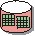

Artifacts >
Artifacts >
 Requirements Artifact Set >
Requirements Artifact Set >
 {More Requirements Artifacts} >
{More Requirements Artifacts} >
 Requirements Attributes
Requirements Attributes
Artifacts >
Requirements Artifact Set >
{More Requirements Artifacts} >
Requirements Attributes
Artifact:
| ||||||||||||
 Requirements Attributes |
This artifact contains a repository of project requirements, attributes and dependencies to track from a requirements management perspective. |
| Role: | System Analyst |
| More Information: |
|
| Input to Activities: | Output from Activities: |
The Requirements Attributes artifact provides a repository of the requirement text, attributes and traceability for all requirements. It should be accessible by everyone in the development organization.
The following views should be available for viewing the current status of the Requirements Attributes artifact:
1. Requirement Attribute Matrices
1.1 <type of requirement>
For each type of
requirement, present a matrix that lists the requirements on one axis, and
all attributes on the other axis. For each requirement, show the state of its
respective attributes.
2. Requirement Traceability Matrices
2.1 <type of requirement>
2.1.1 <type of requirement traced to>
For each type of requirement, present a matrix that lists the
requirements on one axis, and all items traced
to on the other axis. For each trace, show its state (OK or suspect).
3. Requirement Traceability Tree
3.1 <type of requirement>
3.1.1 <type of requirement traced to>
A traceability tree provides a graphical view of traceability
relationships to or from requirements of a specific requirements
type (the root).
The configuration of this repository is defined in the Requirements Management Plan. The repository should be set up and begin to be populated in late inception phase. The contents will evolve throughout the whole development cycle.
A system analyst is responsible for the integrity of the Requirements Attributes artifact, ensuring that:
If you are using a requirements management tool, such as Rational RequisitePro, you can maintain the repository information directly in saved views in the requirements management database.
|
Rational Unified
Process
|